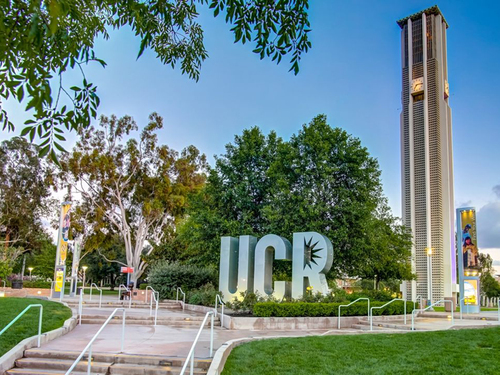
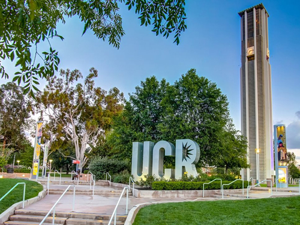
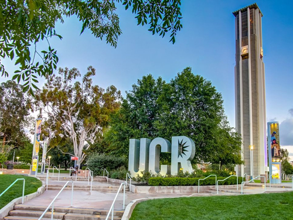

Namith Mareboina
My name is Namith Mareboina. I am currently a freshman at the University of California Riverside. I am majoring in Economics/Administrative Studies. I started my college career at UCR from the Fall quarter of 2020. I attended high school at Del
Norte High School in San Diego. After graduating from UCR, I plan to pursue an MBA degree from the University of Pennsylvania without any breaks or gap years. As for career path and jobs, I have not become concrete on any single job yet. However,
the career path I chose will definitely be in the real of economics and finance.
Currently, My hometown and place of resdience is in San Diego. I have lived in San Diego since September of 2011. Before moving to San Diego, I lived in
Ohio. The thing that I love the most about San Diego and California in general is the climate. The weather in California is nice and warm for a majoity of the year, which is a blessing considering I spent my childhood years in a place where
it is cold for around half of the year. In particular, I love the Fall, Spring, and Summer seasons simply because it rains the most during the Winter Another thing that I love about San Diego and California is the diveristy. The diversity among
people and cultures make it easier for everyone to get along with everyone, as well as provide a fantastic pallet for authentic food from many different cultures. I have made so many fond memories in San Diego with the people that I love.
One of my favorite hobbies that I have during my time away from school and work is anything physically active. I really enjoy working out, playing basketball, and going on a peaceful walk in nature. I also dabble in cooking during my free time.
I am not the greatest as cooking but I have the skills to sustain if I were living on my own. ALthough the world took a turn for the worst in 2020, before the pandemic, I enjoyed going outside with my friends and just hanging out and spending
time with them. I especially enjoyed going to the beach and just enjoying my time outside. After the pandemic and the circumstances it brought, I have been particularly enjoying simply spending time with my family, as we may never get the chance
to spend this much time together at home. There are not any instruments that I currently play, however, I have played the piano in the past and I did not particularly enjoy it to say the least.
Experience
Junior Office Assistant
• Create, maintain, and enter the information into databases in a chronological and alphanumeric order to create ease of use and access.
• Set up and manage paper and electronic filing systems, recording information, and updating paperwork
and official documents.
• Maintaining documents such as attendance records, correspondence, or other material.
AP Calculus AB Tutor
• Assisted students in acquiring better understanding of targeted weak areas within a subject or a subject as a whole.
• Analyzed and maintained records of student's progress to teach individual needs.
• Generate discussion questions
to stimulate topic conversations with students.
Floor Manager
• Travel from room to room with checklists and questions designed to assist residents in daily life.
• Assist nurses and medical staff in order to improve safety, comfort and care of patients.
• Display cheerful, friendly and compassionate
demeanor in order to improve patient mood.
Education
University of California Riverside
Portfolio
 

